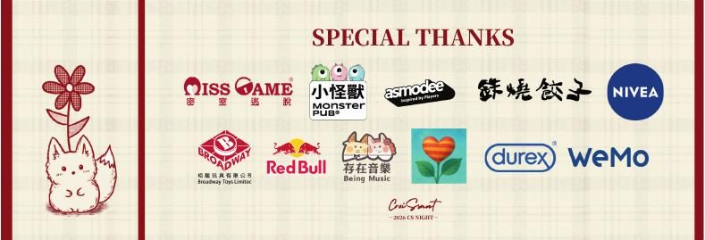
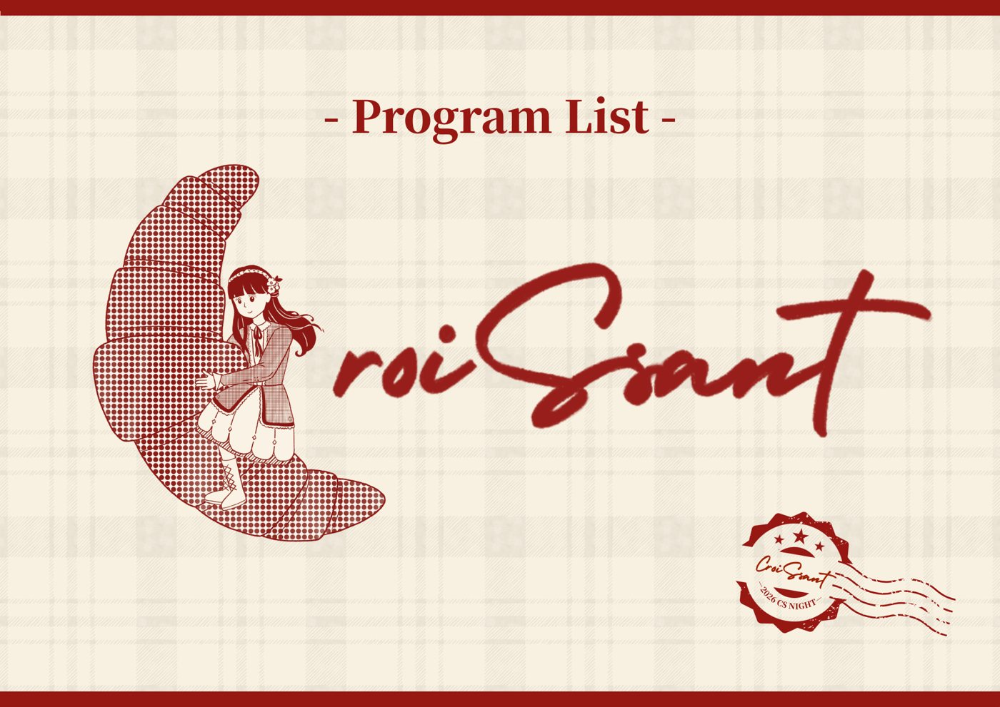

門票和節目單的排版由我負責，主視覺的人物插畫是另一位美宣長繪製。宣傳動畫由我畫所有場景背景，並參與腳本討論。印刷品也由我們聯絡廠商、確認打樣到交件。
這次的印刷品我們印了兩次。第一次拿到成品才發現，主視覺的紅色印出來太像咖啡色；節目單、門票和海報用的紙材不同，同一個紅色印在三種紙上也各不相同。我們依照每種紙材分別微調顏色，第二次才讓三件印刷品看起來是同一套。從那之後我知道，設計要等到變成實物，才算真正完成。
擔任資工系學會美宣長，負責 2026 資工之夜的門票、節目單排版與宣傳動畫的場景背景。


門票和節目單的排版由我負責，主視覺的人物插畫是另一位美宣長繪製。宣傳動畫由我畫所有場景背景，並參與腳本討論。印刷品也由我們聯絡廠商、確認打樣到交件。
這次的印刷品我們印了兩次。第一次拿到成品才發現，主視覺的紅色印出來太像咖啡色；節目單、門票和海報用的紙材不同，同一個紅色印在三種紙上也各不相同。我們依照每種紙材分別微調顏色，第二次才讓三件印刷品看起來是同一套。從那之後我知道，設計要等到變成實物，才算真正完成。